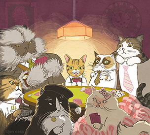

Here's a list of some of the most internet famous furry critters!
The runt of a litter, found in a shed in Bloomington, Indiana, Lil Bub's is a true Whiskas-to-Sheba tale. When owner Mike Bridavsky started posting snaps of her with the musicians at his recording studio on Facebook two years ago, the world fell for Bub's big weird eyes, deformed lower jaw, sticky outy tongue, and stubby legs. These days, Lil Bub is more recognisable than some members of One Direction (sorry Louis). In new Vice film Lil Bub & Friendz, Bridavsky, who seems to be getting mad pussay thanks to his internet-famous pussy, says: "She's like the Nirvana of internet cats. Only Nirvana never sold tote bags." Like, totally.
Arizona's Grumpy Cat has the face of a moody old sort who can't get his usual seat in Wetherspoons. "We uploaded one picture of her and people said it was Photoshopped, so we put up a video," says Brian Bundesen, brother of Tabby, Grumpy Cat's owner. "It was posted to Reddit and it went from there." In six months, Grumpy Cat (real name Tardar Sauce) has gone from internet meme to IRL celebrity: trademarking her name, advertising cat food, travelling around in a limo and going to SXSW. Fans including celebrities Andrew WK and Ian Somerhalder queued for hours to meet her at one recent public appearance, but still her expression said: "The Vampire Diaries guy? Really? No."
A long-haired Persian from Los Angeles, Colonel Meow has the face your boss makes when you turn up to work 90 minutes late and are sweating out last night's booze; the face your parents made when you came back from your gap year with a dolphin tattoo on your ankle; the face your neighbour pulled when your mate threw up in their garden during their barbecue. He's the scariest cat since Scar from The Lion King, with more attitude than Dr Evil's Mr Bigglesworth. He tweets, drinks, swears, calls his owners his "slave beasts", and does interviews and photo shoots. Who has time for this shit? Seriously, a Scotch-drinking cat with a celebrity news blog? Aren't we meant to be going through a recession?
Other famous kitties include:
Your wouldn't be the first to be bewildered my the fame that has somehow befallen these felines, and you won't be the first, or the last, to love them like millions of others.
Source: The Guardian